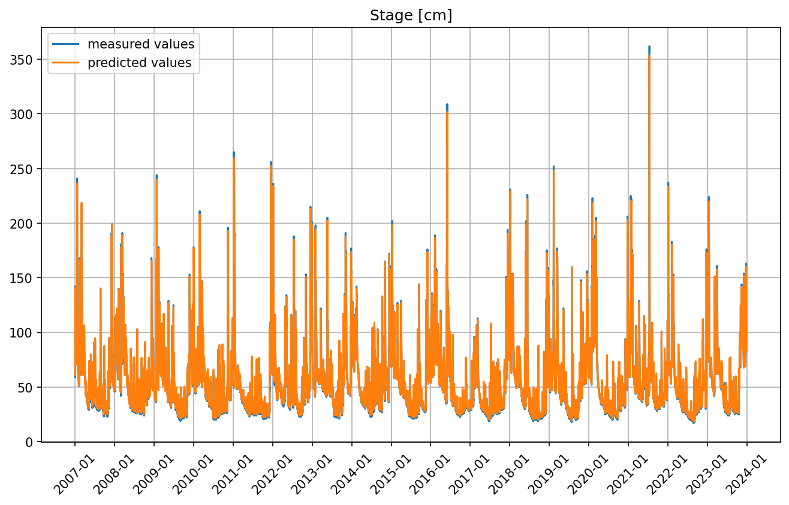

KI-Algorithmus
Heutzutage, im Jahr 2025, findet die künstliche Intelligenz (KI) eine immer größere Resonanz. In meisten Anwendungsfällen handelt sich dabei um ein oder anderes LLM ('Large Language Model') das von Konzernen
wie OpenAI (ChatGPT), Microsoft (Copilot), Facebook (Llama) oder Google (Gemini) sehr aufwendig an Supercomputern bestehend aus 15-20 Tausend, in ein Cluster verbundenen, leistungsstarken Grafikkarten, trainiert werden.
Diese Art von KI hat jedoch den Charme, dass man ihr als Nutzer des vortrainierten Modells ganz einfach eine Eingabe (in einem Chatfenster) geben
und dann auf ein bestimmtes Ergebnis warten kann. Dies ist aber nicht die einzige Art von KI. In vielen anderen Bereichen haben auch deutlich einfachere KI-Algorithmen eine Anwendung gefunden. Diese Algorithmen
(es wird auch Begriff 'Maschinelles Lernen' verwendet) lassen sich problemspezifisch gestallten, anhand verfügbarer Daten trainieren und danach in der Produktion einsetzen.
Was sich echt einfach anhört, gestaltet sich in der Praxis aber deutlich
komplizierter. Es gibt keinen Chatfenster für irgendwelche Dateneingabe und man muss sämtliche Daten immer in einem von Auftrag zu Auftrag unterschiedlichem Format aufbereiten. Diese Phase, der Datenaufbereitung und Bereinigung stellt ein
nicht zu vernachlässigenden Teil des Zeitaufwands dar. Der Rest entfällt auf Auswahl der Modellarchitektur, Training (das tagelang reiner Rechenzeit in Anspruch nehmen kann), Auswertung, Kontrolle und letztendlich auf die Einsatzüberlegungen (Deployment).
Eine bekannte Stärke der KI-Algorithmen ist, zwischen anderem, die Fähigkeit gewisse Muster in gewaltigen Datenmengen zu erkennen und daraus Schlüsse zu ziehen. Schlüsse und Zusammenhänge die ein Mensch nur ahnt dass es sie gibt,
kann eine solche maschinelle KI gleich numerisch beschreiben.
Genau eine solche Problemstellung kommt in Hydrologie vor. Anders als in klassischem Ansatz und Niederschlag-Abfluss Modellierung wo man seit Jahrzenten versucht, mit wenigen Modellparameter
die N-A Abhängigkeit in einem Einzugsgebiet zu beschreiben, glänzen heute KI-Algorithmen durch blosse Analyse der aufgezeichneten Daten. Dabei bedienen sie sich genauso wie Mensch nur der einfachen Mathematik,
bestimmten Parameter und einigen programminternen Tricks um die Linearität der Gleichungen zu brechen. Wo ein echt kompliziertes hydrologisches Modell wenige Dutzende Parameter hätte, verfügt ein KI-Modell oft über mehrere Millione interner
Parameter (unser Modell hier hat ca 13 Mio. Parameter).
LSTM
Im Bereich der Hydrologie werden am meisten die LSTM ('Long Short Term Memory')-Algorithmen eingesetzt. Diese KI-Algorithmen sind besonders gut in Analyse der Zeitreihen. Sie wurden ursprünglich für Übersetzung-Programme entwickelt, sind aber in diesem Bereich durch effektivere, Tranformer-Algorithmen (wie ChatGPT) verdrängt worden. Heute geht man davon aus dass LSTM sich ungefähr nach 500-600 Zeitschritten immer noch an den allerersten Zeitschritt 'errinern' kann. Es hört sich als viel an, ist aber nicht. Wenn man ein ganzes Jahr (ein hydrologischer Zyklus) in stündlicher Auflösung modellieren möchte kommt es an 365 x 24 = 8760 Zeitschritte. Es ist klar dass unterschiedliche zeitliche Auflösungen eine Anwendung finden müssen. Eine feinere, der operativen Vorhersage angemessene, stündliche Auflösung, nur Tagen oder Wochen vor der Stunde Null (dem Zeitpunkt der Prognoseberechnung) und eine grobere, tägliche Auflösung, für Zeitschritte ferner in der Vergangenheit. Man macht es nach dem Moto: "Spielt es eine große Rolle ob ein Regen vor 4 Monaten am Vormitag oder am Nachmitag gefallen ist?" Aber in Ganzem und Großem wird doch jeder Regentropfen berücksichtigt.
CNN
CNN ('Convolutional Neural Network') ist ein aus Computer Vision (CV) bekannter Algorithmus. Dieser Algorithmus analysiert Bilder, Bereich nach dem Bereich, ein Pixel nach dem anderen, mittells mehrerer Filter (auch Kernel genant- 3x3, 5x5 usw.) die sich entlang Zeilen bewegen. Wenn gut trainiert, kann er Gegenstände, Menschen, sogar Gesichter erkennen. In der Hydrologie, beschäftigt man sich jedoch normalerweise nicht mit Klassifikations-, sondern mit Regressionsproblemen. Das heißt, es muss, als Ergebnis, eine Zahl geschätzt werden und keine Kategorie oder keine blosse 'Ja' oder 'Nein' - Aussage getroffen werden.
CNN-LSTM
Ein Regen ist sowohl zeitlich als auch räumlich äußerst ungleichmäßig. Es ist keine Seltenheit das ein Ort 'Land unter' steht und dessen Nachbarort keinen einzigen Tropfen abbekommen hat.
Oder die Richtung in welchem Unwetter über ein EZG zieht. Das kann auch unterschiedliche Folgen haben, selbst wenn theoretisch die selbe Niederschlagmenge gefallen wäre.
Dieses natürliche Phänomen kann man NICHT durch Berechnung der Mittelwerte des Niederschlags bezogen auf ganzes Einzugsgebiet gut genug erfassen. Man könnte den Regen aber betrachten genau wie er ist-
flächendeckend differenziert und zeitlich diskretisiert- also ein Bild als eine Momentaufnahme.
So ist man auf die Kombination der zwei oben beschriebenen Algorithmen gekommen. (Mehr dazu kann man in englischer Sprache hier lesen).
Einige Anpassungen zu dem veröffentlichten Papier musste man jedoch vornehmen. Mich persönlich hat eine Tatsache gestört. CNN-Algorithmus wird z.B. eine Katze im Foto erkennen, egal wo sie sich befindet (links oben, rechts oben usw.). Dasselbe gilt
aber nicht für Niederschlag. Wolke in einer Ecke des Fotos (des Radarbildes) kann komplett andere Reaktion im EZG hervorufen als die gleich große Wolke in einer anderen Ecke. Deswegen hat man sich etnschieden die Größe des Kernels (Filters)
anzupassen. Diese Kernelgrösse ist eigentlich Gegenstand der Modellarchitektur und kann von 1x1 bis "maximale Breite x maximale Höhe" des Fotos (in Radarpixel) beliebig groß ausgewählt werden.
Eine große Rolle spielt das womöglich auch nicht, da es in jedem Fall an die enorme Überzahl der Parameter ankommt.
Auf dem Bild unten ist ein für das Training benutzter Datensatz dargestellt. Das sind, im unterem Teil des Bildes, die Wasserstandmessung auf einem Pegel sowie, im oberen Teil des Bildes, die stündlichen Niederschlagszeitreihen
(punktuell ausgelesen aus Radolan-Archiv) für jeden, dem Einzugsgebiet zugehörigen, Radarpixel dargestellt. Der angewandte Ansatz hat starken Gebrauch von GIS-Methoden gemacht, z.a. für Zuweisung der Radarpixel zu Einzugsgebieten.
Das Modell wurde mit 6 Monaten vergangenen Niederschlags, 5,5 Monate davon in täglicher Auflösung und die letzten 14 Tage in stündlicher Auflösung, trainiert.
Dazu wird noch nur die aktuelle Wasserstandmessung (1 auf voller Stunde gemessener Wert) benötigt.
Die Vorhersage des Wasserstands basiert auf einer Kombination aus Niederschlagszeitreihen von Radolan-Archiv und ICON-Prognose für entsprechende dem EZG zugehörige Abtastpunkte (die den Radolan-Radarpixel lagemäßig gleichzusezten sind).
Diese Niederschlagsmatrix, als 'Input', ist immer 6 Monate lang und besteht aus stündlichen Zeitreihen für jeden der 1440 Pixelpunkte. Die tägliche Auflösung wird dann in Vorverarbeitung intern herunter berechnet.
Vorhersage erfolgt immer an einer vollen Stunde, ebenso in stündlicher Auflösung und für die nächsten 6 bis 12 Stunden (obwohl technisch möglich, mehr als das scheint, wegen der, durch Niederschlag-Vorhersage geerbten Unsicherheiten, weniger sinnvoll zu sein).
Die 6 Monate des eventuellen vergangenen Niederschags sollten den Verlauf der Bodenfeuchte dem KI-Modell wohl verständlich machen.
Auf ganze 12 Monate des Regenvorlaufzeit wurde in diesem Modell verzichtet. Grund dafür ist dass man derzeit nicht robust genug die Temperatur ins Modell einbinden konnte. Die Temperatur, als zusätzlicher Kanal zu dem Radarbild (und gleichen Pixeln)
würde dem Modell beim Verstehen der Schneeschmelze helfen. Allerdings werden die Temperatur-Raster für ganz Deutschland,
anders als Radolan, nicht in Echtzeit sondern mit einer Verzögerung von anderthalb Monaten auf dem Server des Deutschen Wetterdienstes veröffentlicht. Also, man kann das Modell so trainieren, aber umsetzen, kann es nicht so einfach.
Theoretisch, könnte man die bestehende Lücke von 1,5 Monaten mit Daten von einzelnen Wetterstattionen, die es in Echtzeit tatsächlich gibt, schließen. Das wäre dann auch kein Raster (flächendifferenziertes Input) mehr und noch schlimmer,
sind diese Wetterstationen anfällig für Ausfälle. Man will auf jeden Fall verhindern, dass Ausfall einer einzelnen Wetterstation das ganze Prognose-System zum Absturz bringt. Die Kettenabstürze der Systeme durch einen Stromausfall oder ähnliches darf man nie ganz ausschliessen.
Eigentlich nur ein Neustart des Systems in einem solchen Fall wäre aus programmier-technischer Sicht, wegen enstandenen Lücken in Input-Daten problematisch gewesen.
Eine andere Möglichkeit wäre, sich ganz auf die Temperatur aus ICON-Modell zu verlassen, wobei sich da nicht um tatsächliche Messung ('ground truth') sondern um Prognosewerte des Wettermodells handelt. Diese Werte mögen oder auch nicht mögen zutreffen.
Ein längerer Ausfall wäre auch hier problematisch gewesen, da die aktuellen Berechnungsergebnisse des ICON-Modells nach maximal 24 Stunden vom Server gelöscht werden und die eventuelle längere Lücken in Daten nicht mehr gefüllt werden können.
Beim Radolan-Archiv ist es anders, weil dieses Archiv vom DWD selbst ständig fortgeschrieben wird. Falls unser System z.B. mehrere Stunden oder Tage aus irgendwelchem Grund 'offline' gewesen wäre,
kann es sich bei der nächsten erfolgreichen Internetverbindung einfach alle fehlenden Werte von einer einzigen Quelle nachholen und somit problemlos durchstarten.
Absurderweise ist das für Temperatur derzeit nicht der Fall.
Deswegen hat man sich bewusst in dieser TEST-Phase für ein vielleicht etwas weniger
starkes aber dazu viel robusteres, leichteres und weniger für Störungen anfälliges Modell, ohne Temperatur-Input, entschieden. Dies könnte sich in der Zukunft noch ändern.
Die meisten der dargestellten Pegel wurden mit Pegelaufzeichnungen von lediglich einem Jahr (Jahr 2023), manche mit nur 7 Monaten, der verfügbaren Daten trainiert. Dies sollte auch die Zustände an kleinen gearde errichteten Messstation widerspiegeln. In solchen Fällen, ganz am Anfang der Sensorerfassung, verfügt man gar nicht mit langjährigen Zeitreihen. Wie bereits erwähnt, im Laufe der Zeit, je mehr Daten zu Verfügung stehen lässt sich der Algorithmus nach einer Weile neutrainieren und Vorhersage verbessern.
Auf den Abbildungen unten ist ein Bespiel der Berechnungsergebnisse in so zu sagen 'Laborbedingungen' zu sehen.
Erstes Bild zeigt die Auswertungsergebnisse vom Datensatz für Jahr 2023 den KI-Modell einzig gesehen hat und der für Training benutzt wurde.
Nächste Abbildung zeigt die Ergebnisse dieses trainerten Modells auf dem Datensatz für Jahre 2007-2024, die Modell gar nicht gesehen hat (ausser Jahr 2023), inklusive HW-Ereignis von 2021.
Dazu muss man auch ehrlicherweise sagen dass es sich immer um Prognose für einen Zeitschritt in der Zukunft gehandelt hatte. Nichtdestotrotz sehen die Ergebnisse vielversprechend aus.
In dem weiteren, logischen, Schritt möchte man jetzt herausfinden, wie sieht das aus mit echten Daten (Input aus Niederschlag-Prognose) und für mehrere Stunden in Zukunft? Und das genau ist das Ziel und Zweck dieser Testseite- mehr Daten aus einem simulierten Betrieb zu sammeln um die Qualtiät der Prognose beurteilen und verbessern zu können. Auf diese Weise sollten auch die Einflüsse der verschiedenen Unsicherheiten, die es in 'Laborbedingungen' nicht gibt, abgeschätzt werden. Verschiedene Unsicherheiten können entstehen durch Probleme mit Sensoren, mit KI-Modell selbst aber auch durch Ungenauigkeiten des Inputs, bzw. der Niederschlagsprognose des DWD.
Neben enormen Vorteilen, insbesondere für kleine und kleinste Gewässer, haben die KI-Algorithmen auch einige Einschränkungen in der Anwendung:
- Unser Algorithmus z.B. kann derzeit, wegen fehlenden 'Temperatur-Inputs', nur begrenzt und implizit (durch Benutzung des letzten Messwertes) die Schneeschmelze-Wasserstände vorhersagen
- Durch besondere geologische Formationen beinflüsste Bereiche (wo die Bäche oder ein ganzer Fluss vom Erdboden verschwinden) sind extrem schwierig mit diesem Ansatz zu modellieren
- Eine starke antrophogene Veränderung des Einzugsgebietes (z.B. Versiegelung, Abholzung, aber auch die Waldbrände) können die bestehende NA-Abhängigkeiten zunichte machen und ggf. ein neues Training aber nur mit Daten nach der Veränderung erfordern
- Einzugsgebiete die durch, von Menschen gesteuerte, Stauanlagen beeinflüsst sind. Ungesteuerte Rückhaltebecken sind dagegen kein Problem.
- Grössere und komplexere Flussgebiete wo mehrere Faktoren zusammentreffen (Schneeschmelze, Stauanlagen mit Wasserkraftwerken, Schleusen, Schifffahrt, geregelte Ausflüsse usw.)